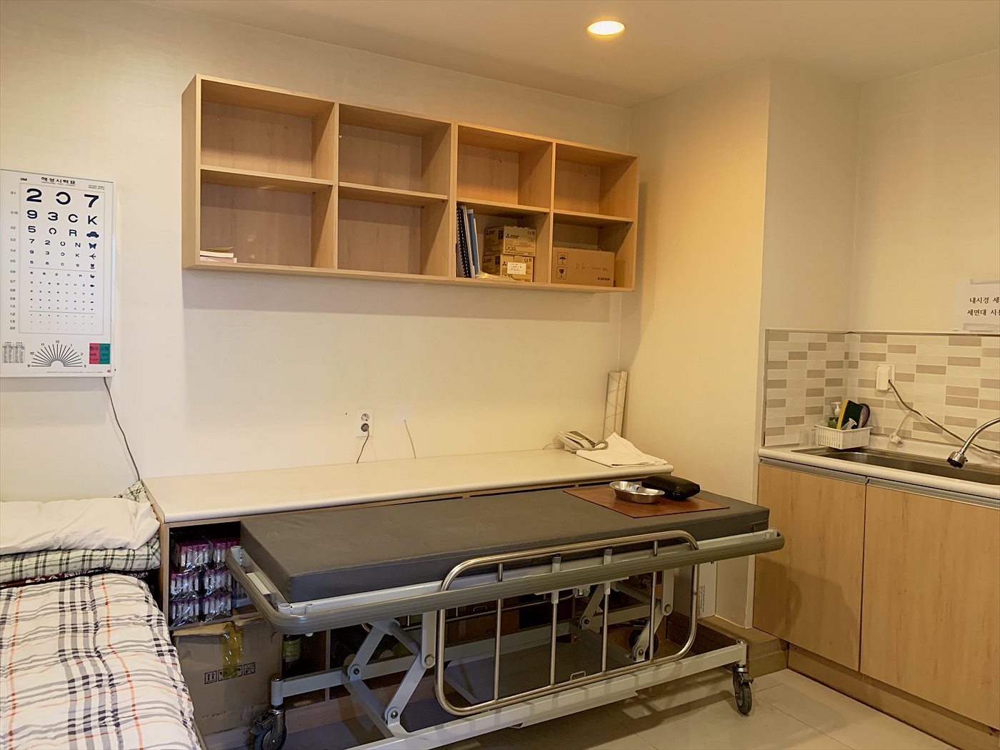
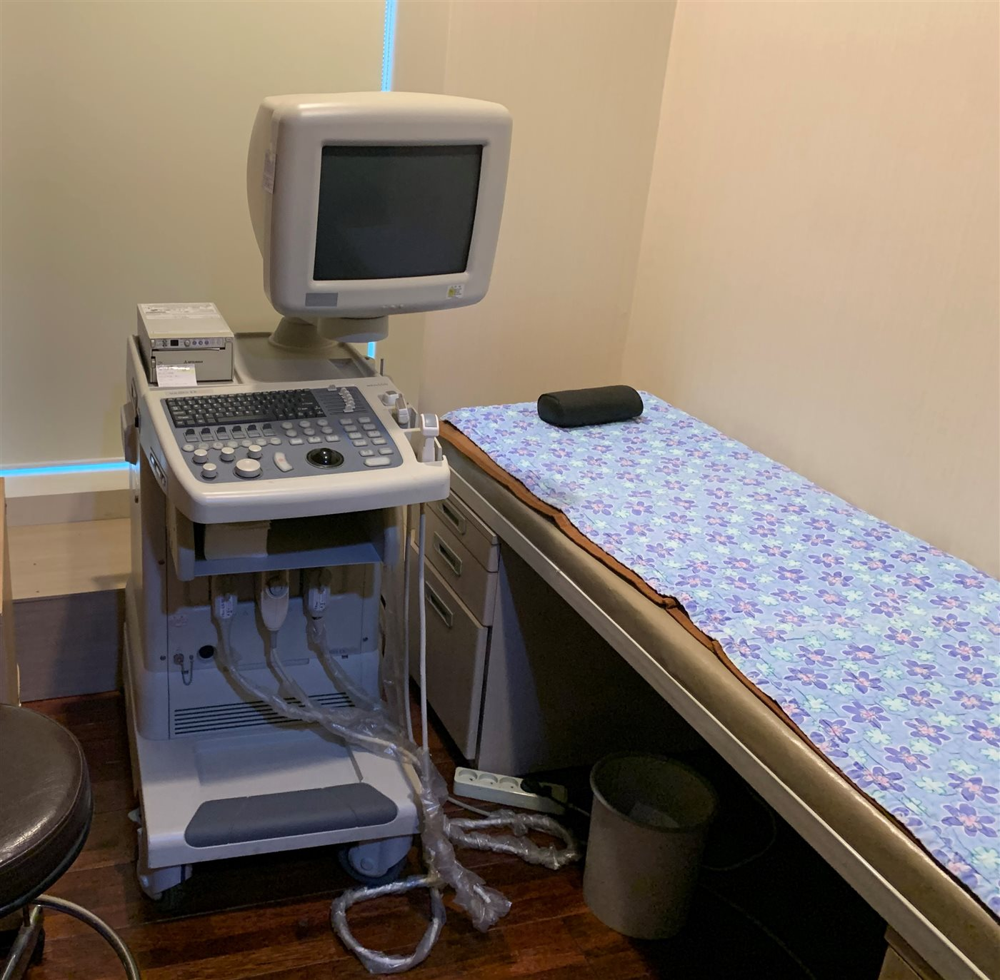
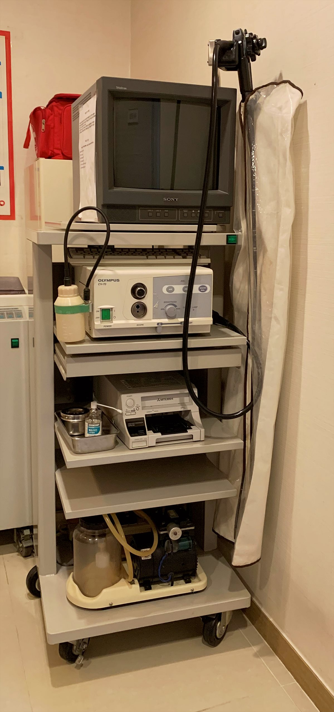

핵심 요약
- 초음파(복부·갑상선·신장)를 포함한 일반 건강검진과 내시경 검사를 진행합니다. 국가건강검진은 시행하지 않습니다.
- 혈액·소변검사는 원내 검사실에서 당일 확인되고, 이상 소견은 그 자리에서 원장 진료로 이어집니다.
- 콩팥·혈압·혈당 소견은 신장 진료 경험이 많은 원장이 직접 판독합니다 — 검진에서 끝나지 않고 관리 계획까지 받는 것이 저희 검진의 차이입니다.
노승현내과의 검진
저희 건강검진은 초음파 검사를 포함한 일반 건강검진으로, 편리하고 정확하게 받으실 수 있도록 운영합니다. 원내 검사실에서 기본 검사를 진행하고, 이상 소견이 나오면 별도 병원을 찾을 필요 없이 바로 원장 진료로 연결됩니다. 특히 콩팥·혈압·혈당 관련 소견은 신장 진료 경험이 많은 원장이 직접 판독하고 관리 방향을 잡아 드립니다.
검사 항목
| 구분 | 내용 |
|---|---|
| 혈액검사 | 혈당·당화혈색소, 콜레스테롤, 간 기능, 콩팥 기능(크레아티닌·eGFR), 빈혈 등 |
| 소변검사 | 단백뇨·혈뇨·요당 — 콩팥 질환의 첫 신호를 확인하는 기본 검사 |
| 초음파 | 복부 · 갑상선 · 신장 초음파 (비급여 비용 안내) |
| 심전도 | 부정맥·심장 이상 확인 |
| 내시경 | 내시경 검사 및 소독 관리 — 검사 일정은 전화 예약 |
| 영상 검사 | 흉부 X-ray 등 |
※ 국가건강검진은 시행하지 않으며, 일반 건강검진으로 진행됩니다. 검진 구성과 내시경 세부 항목은 전화로 확인해 주세요. 031-924-0875
이런 분께 권합니다
- 당뇨·고혈압 가족력이 있는데 검사를 받아본 지 오래된 분
- 건강검진에서 요단백·크레아티닌 이상 소견을 받고 재검이 필요한 분
- 속쓰림·소화불량이 반복되어 내시경 검사가 필요한 분
- 투석·신장 질환 가족이 있어 콩팥 상태를 확인하고 싶은 분
검사 준비 안내
| 검사 | 준비 |
|---|---|
| 혈액검사 (혈당·지질 포함) | 8시간 이상 금식 후 오전 내원 권장 (물 소량 가능) |
| 복부초음파 | 6~8시간 금식 — 담낭을 정확히 보기 위해 필요합니다 |
| 갑상선·신장 초음파 | 별도 준비 없음 |
| 내시경 | 전날 저녁부터 금식 등 — 전화 예약 시 상세 안내 |
| 소변검사 | 준비 없음 — 생리 중이면 말씀해 주세요 |
검진·검사 시설



자주 묻는 질문
검진 결과에서 콩팥 수치가 이상하다는데 어디로 가야 하나요?
검진 결과지를 그대로 가져오시면 됩니다. 소변·혈액 재검으로 실제 콩팥 상태를 확인하고, 필요한 경우 진행 억제 치료를 바로 시작합니다.
내시경은 예약해야 하나요?
네, 검사 준비(금식 등)가 필요해 전화 예약 후 안내에 따라 내원해 주세요.
검진 결과는 언제 나오나요?
원내 검사실에서 진행하는 혈액·소변검사는 대부분 당일 확인됩니다. 외부 의뢰 항목이 있는 경우 결과가 도착하는 대로 안내해 드리며, 결과 상담은 진료로 이어서 진행합니다.
진료·투석 상담 안내
검진 결과가 그 자리에서 진료로 이어지는 것이 저희 검진의 차이입니다. 노승현내과의원은 2003년 개원 이후 22년째 일산서구 주엽동 한 자리에서 투석과 신장·내과 질환을 진료하고 있습니다.
2003년~투석 전문 진료
22년한 자리에서 진료
주엽역3호선 · 중앙로 인근
당일 검사원내 검사실 운영
NOH SEUNG HYUN INTERNAL MEDICINE
좋은치료의 DNA가 있는곳, 노승현내과의원
- 내과 전문의 원장 직접 진료
- 혈액투석 · 임시투석 · 야간투석 상담
- 혈액·소변검사 당일 확인, 초음파 검사
- 고혈압 · 당뇨 · 통풍 등 내과 질환 병행 관리
진료·투석 상담 031-924-0875 · 3호선 주엽역 인근, 고양시 일산서구 중앙로 1413 동영빌딩 6층